| PATH |

The Studio, Movie, and Talent entities are not especially interesting when considered separately. Their real significance becomes apparent only in their relationships to each other. Every Movie has one corresponding Studio. One Studio can have many Movies. A particular actor (Talent) can star in several movies.
Relational databases model not just individual entities, but entities' relationships to one another. For example, a Movie has a corresponding Studio. This is represented by both the MOVIE and STUDIO tables having a STUDIO_ID column. In MOVIE, the STUDIO_ID column is a foreign key, while in the STUDIO table it's a primary key. A foreign key correlates with the primary key of another table in order to model a relationship a source table (MOVIE) has to a destination table (STUDIO). In the following diagram, notice that the value in the STUDIO_ID column for both movies is "501". This matches the value in the STUDIO_ID column of the Columbia Pictures movie studio. In other words, the movies Tootsie and Taxi Driver both belong to Columbia Pictures.
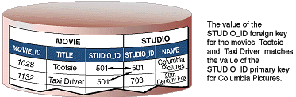This plays out in your running application as follows: Suppose you fetch a Movie object. Enterprise Objects Framework takes the value for the movie's studioId attribute and looks up the studio with the corresponding primary key.
For your application to take advantage of such database-defined relationships, your model must specify the corresponding relationships. The example Movies model already defines these relationships. If you used that model in your project, you can skip to "Adding Movies to the Application". Otherwise, you'll need to add relationships using EOModeler.
To add the relationships between Movie and Studio in EOModeler, follow these steps:
Choose Tools > Diagram View.
You are presented with a graphical view of the entities in your model. Because no relationships have been defined, you'll see only a group of individual entities.
Position the Movie and Studio entities next to each other.
Control-drag
from the studioId attribute of the Movie entity to the studioId attribute
of the Studio entity.
You'll add more relationships to the model in "Expanding the Movies Model", using a different technique.
For the client to be able to access the objects referenced by the relationships of each entity, they have to be defined as client-side class properties. EOModeler does not automatically select this option for new relationships.
Select Tools > Table Mode.
Select the Studio entity.
In
the Studio Relationships table, click the ![[image: ../Art/clientsideclassproperty.gif]](../Art/clientsideclassproperty.gif) column in
the movies relationship information row. When the arrows show up,
it means that the relationship is a client-side class property.
column in
the movies relationship information row. When the arrows show up,
it means that the relationship is a client-side class property.
Repeat the process for the studio relationship of the Movie entity.
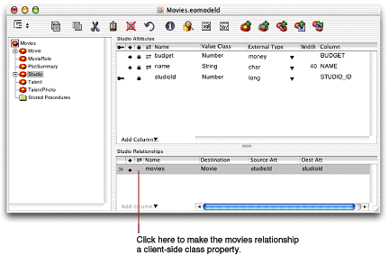You've just defined two relationships in the Movies model:
As you can see, there are two types of relationships:
The relationships defined in the Movies model now come into play in your application. You can use Studio's movies relationship to display the movies for the selected studio.
In this type of configuration, called master-detail, the master table holds records for the source of the relationship, while the detail table holds records for the destination. As individual records in the master table are selected, the contents of the detail table change to show the records that correspond to the selection in the master. In the Studio Manager application, Studio is the master table and Movie is the detail table.
Starting with this exercise, you will create the final user interface of the Studio Manager application. This means that you should start off by removing all objects added earlier to your nib file; also, give your application window a title.
In Interface Builder, delete the table view from the window.
Delete the Studio EODisplayGroup and the EditingContext from the nib file window.
Save the nib file.
Select the window by clicking its title bar.
Choose Show Info from the Tools menu.
Enter Studio
Manager in the Title field of the Attributes
pane and press Enter.
You can create a master-detail interface by simply dragging a relationship from EOModeler onto your window.
Drag the Studio entity's movies relationship from EOModeler onto the window in Interface Builder.
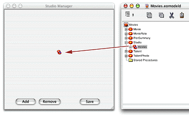This operation creates a master-detail interface. Columns are automatically added for all of the attributes marked as class properties; you can delete any columns you don't want displayed to the user.
Rearrange and resize the tables so that they are side by side.
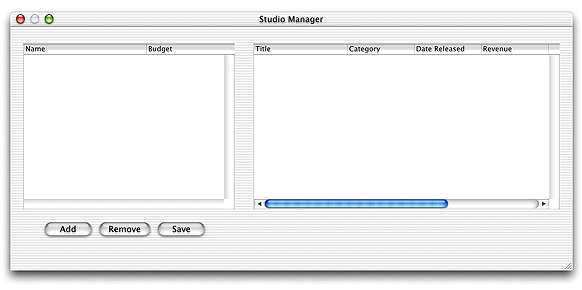Reconnect the Add and Remove buttons to the new Studio EODisplayGroup.
(See "Adding Action Methods" for these procedures.)
For a Java Client application, the interface controller-represented by the File's Owner icon in the nib file window-is the controller object in the Model-View-Controller design scheme. The interface controller comes already connected to its view through the component outlet. But you must connect it to its model object, the editing context.
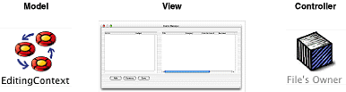Control-drag from the File's Owner icon to the EditingContext icon in the nib file window.
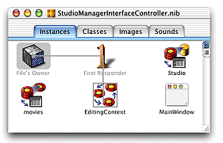In the Connections
pane of the Info window, select the editingContext outlet.
Click Connect.
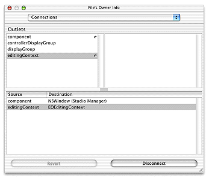Control-drag from the File's Owner icon to the Studio icon in the nib file window.
In the Connections pane of the Info Window,
select the displayGroup outlet.
Click
Connect. (Alternatively, you can double-click the displayGroup outlet
to connect it to the File's Owner.)
Drag a Message Text element from the palette window into the content window, above the Studio table.
Choose Tools > Show Info.
Display the Attributes pane of the Info window.
Enter Studio in
the Title field.
Repeat the process for the Movies table.
Select the Budget column in the Studio table.
Choose Tools > Show Info.
Display the Formatter pane of the Info Window.
Select the standard currency formatter (the one that does not display negative numbers in red).
Repeat the process for the Revenue column in the Movies table.
Select the Date Released column in the Movies table.
Display the Formatter view of the NSTableColumn Info window.
Select the formatter that uses the "%b %d, %Y" format.
Choose File > Test Interface.
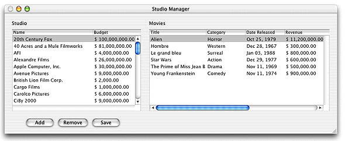Choose Interface Builder > Quit Interface Builder to end the test.
To see the effects of your
changes, you must compile and run the application. However, before
you run the application, there is one last step to perform. The
applet providing the running environment for your Java Client application
is set to a default size in the WOJavaClientApplet bindings in Main.wod.
This size could be too small to accommodate your user interface
(or too large for it).
In Interface Builder, select the content window by clicking its title bar.
Choose Tools > Show Info.
Display the Size pane.
Click Current in the Min Size group.
Write down the values
for the w (width) and h (height)
attributes.
![[image: ../Art/ibwindowsizeInfo.gif]](../Art/ibwindowsizeInfo.gif)
In the Groups & Files list of Project Builder's main window, click the disclosure triangle to the left of the Web Components group.
In the Web Components group, click the disclosure triangle to the left of the Main subgroup.
In the Main subgroup, click the disclosure triangle to the left of the Main.wo subgroup.
In the Main.wo subgroup, select Main.wod.
In
Project Builder, select Web Components > Main > Main.wo > Main.wod.
Enter the dimensions of the window in the height and width bindings.
Applet: WOJavaClientApplet {
height = 375; // change this
width = 865; // and this
interfaceControllerClassName = "studiomanagerinterfacecontroller.client.StudioManagerInterfaceController";
useJavaPlugin = YES;
}Save Main.wod.
Now you are ready to test the application.
See "Building the Application" for details.
Click ![[image: ../Art/launchicon.gif]](../Art/launchicon.gif) to launch the server application.
to launch the server application.
Launch the client application.
See "Running a Java Client Application" for details on launching Java Client applications.
When you select a studio in the Studio table, the display changes in the Movies table to show the selected studio's movies.
One of the primary functions of the Studio Manager application is to allow one studio to purchase movies from another. To make this possible, you'll now add a pop-up list to the user interface.
The pop-up list displays a list of all of the studio titles. When you select a new studio in the pop-up list, you cause that studio to purchase the movie that's selected in the Movies table view.
Drag a pop-up list (labeled "Item1" on the Views palette) into the window.
Put the pop-up list directly below the Studio table view and leave some space between it and the row of buttons. Later you will be adding fields between the pop-up list and the buttons. See Figure 3-1 for a guide.
The pop-up list needs a source from which
to obtain the list of options to display when the user clicks on
it, in this case, a list of studio names. You need to connect the
pop-up lists titles aspect
with the Studio EODisplayGroup's name property.
Control-drag from the pop-up list to the Studio EODisplayGroup.
In the NSPopupButton Info window, select EOValueSelectionAssociation from the pop-up list at the top of the left column.
Select titles in
the left column. The titles aspect
is bound to the class key whose values you want to display in the
pop-up list.
Select name in
the right column (since you want to display studio names in the
pop-up list).
Click Connect.
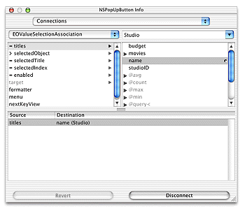Now
you have to add another binding to the EOValueSelectionAssociation
so that when you change the selected studio title, it sets the corresponding studio relationship property
in the selected Movie object. In other works, when you choose a
studio from the pop-up list, the value of the studio property
of the selected movie is set to the studio selected in the pop-up
list.
Control-drag from the pop-up list to the movies EODisplayGroup.
Display the EOValueSelectionAssociation pane of the Info window.
Select selectedObject in
the left column.
Select studio in
the right column.
Click Connect.
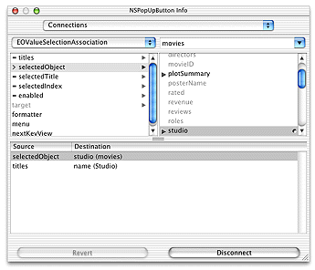The selectedObject aspect
is bound to the relationship property (in this example, Movie's studio property)
that corresponds to the object bound to the titles aspect (Studio).
(See "Building and Testing Your Application" for details.)
Figure 3-1 Master-detail interface
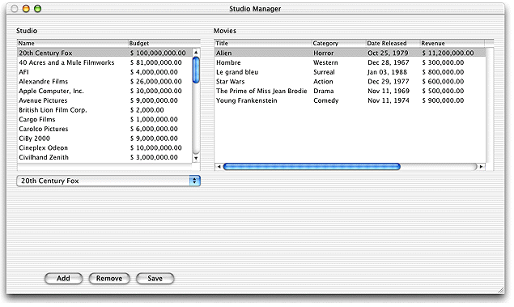You can now test the behavior of the pop-up list. For example,
suppose you want to transfer the movie Alien from
the 20th Century Fox studio to MGM. First select 20th Century Fox
to display its movies. Then select Alien in
the list of movies. Finally, use the pop-up list to change the selected
studio from 20th Century Fox to MGM. This has the effect of removing Alien from
20th Century Fox's movies relationship
array and adding it to the movies relationship
array of MGM. It also sets the Alien Movie
object's studio relationship
property to point to the new studio, MGM. When you use the pop-up
list to transfer a movie, you'll notice that the movie disappears
from the original studio's movie list and reappears in the movie
list of the new studio.
These changes aren't committed to the database until you
click Save. At that time Enterprise Objects Framework translates
the changes you made in the object graph into the appropriate database
changes. For example, it sets the foreign key studioId in
the transferred Movie object to have the same value as the studioId primary
key of its new studio.
Note that Enterprise Objects Framework manages all of this for you without requiring you to write any code.
For more information on associations, see "What Is an Association?".
© 2001 Apple Computer, Inc.